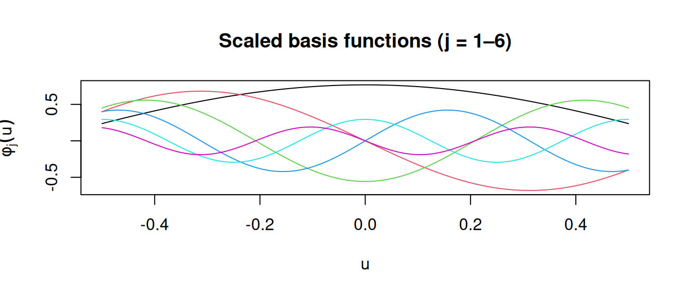
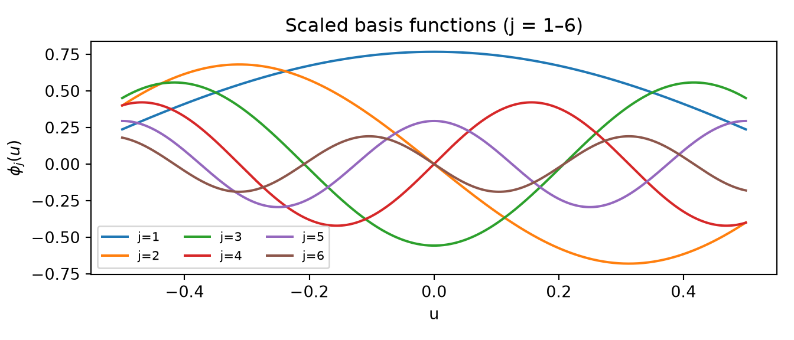
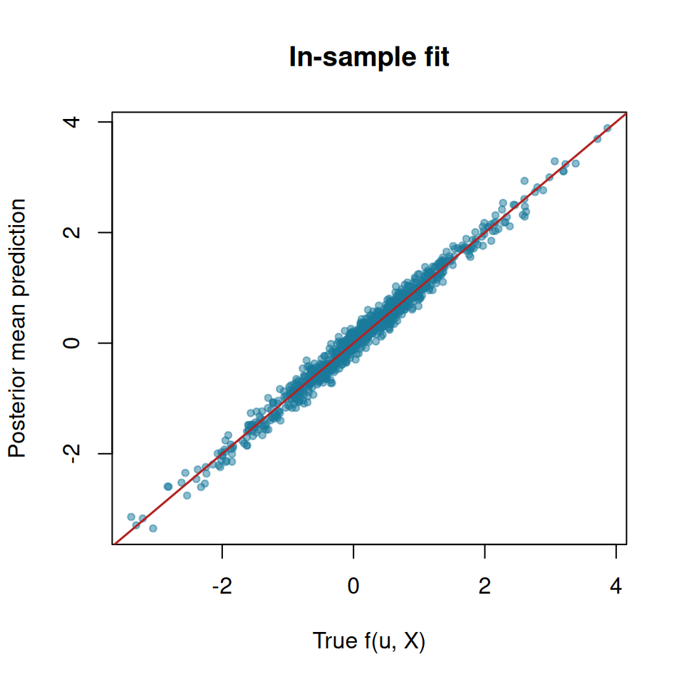
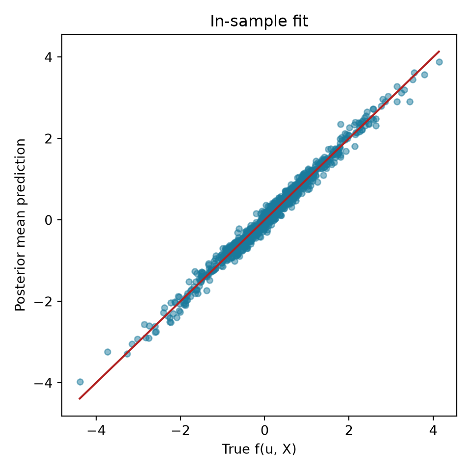
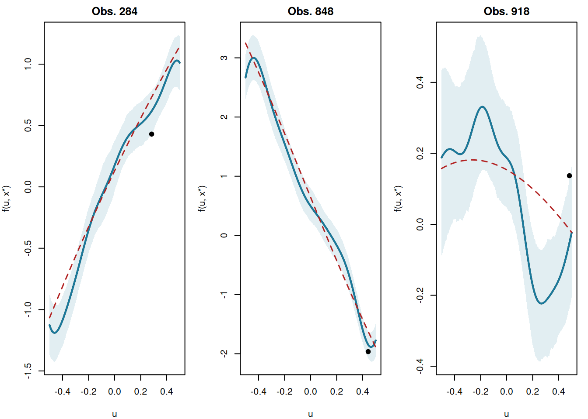
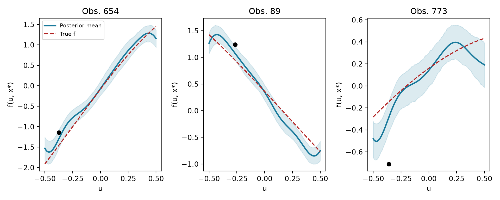

library(stochtree)
library(ggplot2)Targeted Smooth BART Approximation via Leaf Regression
This vignette demonstrates how to approximate BART with Targeted Smoothing (tsBART) (Starling et al. (2020)) using stochtree’s leaf regression interface. tsBART extends BART by placing a Gaussian Process (GP) in the leaves of each tree, allowing smooth, nonlinear functions of a designated “target” variable \(u\) within each leaf node defined by covariates \(X\).
The key idea is that a GP on a compact interval can be well approximated by a linear regression on a finite-dimensional basis expansion of \(u\).
Hilbert Space GP Approximation
We omit much of the formalism and derivation of the Hilbert space GP approximation in this vignette. A blog post by Orduz (2024) provides an excellent overview, citing both Solin and Särkkä (2020) and Riutort-Mayol et al. (2023) for further academic references.
Let \(u \in [-L, L]\) be the target variable, symmetric around zero. A GP with a squared exponential kernel \(K\) on \(u\) is defined as
\[ \begin{aligned} g(u) &\sim \mathcal{GP}(0, K)\\ K(u, u') &= \sigma^2 \exp\left(-\frac{(u - u')^2}{2\ell^2}\right) \end{aligned} \]
The Hilbert space approximation represents a GP \(g(u)\) as
\[ g(u) \approx \sum_{j=1}^{J} \sqrt{S(\lambda_j)} \phi_j(u) \beta_j, \quad \beta_j \sim \mathcal{N}(0, I) \]
where \(J\) is the total number of basis functions in the finite-dimensional expansion, and \(\phi_j\), \(S(\cdot)\), and \(\lambda_j\) are defined as follows:
\[ \begin{aligned} \phi_j(u) &= \frac{1}{\sqrt{L}} \sin\!\left(\frac{\pi j (u + L)}{2L}\right), \\ S(\sigma, \ell, \omega) &= \sigma^2 \sqrt{2\pi}\, \ell \exp\!\left(-\frac{\ell^2 \omega^2}{2}\right)\\ \lambda_j &= \left(\frac{\pi j}{2L}\right)^2 \end{aligned} \]
Evaluating \(\phi_j\) at the data points and scaling by \(\sqrt{S(\lambda_j)}\) gives a basis matrix \(\Omega\) such that \(\Omega \beta \sim \mathcal{N}(0, K)\) where \(K\) is the kernel matrix — so a standard \(\mathcal{N}(0, I)\) prior on \(\beta\) induces the target GP prior on \(g(u)\).
In the tsBART approximation, \(X\) partitions the data within each tree (as in standard BART) and \(g_{\mathcal{L}}(u) = \Omega_{\mathcal{L}} \beta_{\mathcal{L}}\) is a GP on each leaf \(\mathcal{L}\). The combined prediction at \((X_i, u_i)\) is
\[ \hat{y}_i = \sum_{t=1}^{T} g_{\mathcal{L}_t(X_i)}(u_i) = \sum_{t=1}^{T} \Omega(u_i)^\top \beta_{\mathcal{L}_t(X_i)} \]
where \(T\) is the total number of trees in the ensemble.
This can be sampled straightforwardly as a stochtree BART model with leaf_basis_train = Omega.
Setup
Load necessary packages
import matplotlib.pyplot as plt
import numpy as np
from scipy.stats import norm
from stochtree import BARTModelSet a seed for reproducibility
random_seed <- 1234
set.seed(random_seed)random_seed = 1234
rng = np.random.default_rng(random_seed)Simulation
We simulate a dataset in which the response depends on \(u\) and \(X\) through an interaction:
\[ f(u, X) = 3 X_1 u + \frac{(X_2 - 1)(1 - u)^2}{3} + \Phi(2 X_3 u) \]
where \(u \sim \text{Uniform}(-0.5, 0.5)\) is the GP target variable, \(X \in \mathbb{R}^3\) are additional covariates, and \(\Phi\) is the standard normal CDF.
n <- 1000
p <- 5
u <- runif(n, -0.5, 0.5)
X <- matrix(rnorm(n * p), nrow = n)
f_true <- function(row) {
# row = c(u, x1, x2, x3)
3 * row[2] * row[1] + (row[3] - 1) * (1 - row[1])^2 / 3 + pnorm(2 * row[4] * row[1])
}
f0 <- apply(cbind(u, X), 1, f_true)
y <- f0 + rnorm(n, 0, 0.25 * sd(f0))
cat("Signal SD:", round(sd(f0), 3), "\n")Signal SD: 0.966 cat("Noise SD: ", round(0.25 * sd(f0), 3), "\n")Noise SD: 0.241 n = 1000
p = 5
u = rng.uniform(-0.5, 0.5, n)
X = rng.standard_normal((n, p))
def f_true(u, x):
return 3 * x[0] * u + (x[1] - 1) * (1 - u)**2 / 3 + norm.cdf(2 * x[2] * u)
f0 = np.array([f_true(u[i], X[i]) for i in range(n)])
y = f0 + rng.normal(0, 0.25 * f0.std(), n)
print(f"Signal SD: {f0.std():.3f}")Signal SD: 1.027print(f"Noise SD: {0.25 * f0.std():.3f}")Noise SD: 0.257Constructing the Basis Matrix
Two helper functions below construct the basis:
Omega(u, J, L)— evaluates the \(J\) eigenfunctions at the points inuSDiag(sigma, l, J, L)— diagonal matrix of spectral density values \(S(\lambda_j)\)
Omega <- function(u, J, L) {
phi <- function(u, j, L) sqrt(1 / L) * sin(pi * j * (u + L) / (2 * L))
omega <- matrix(0, nrow = length(u), ncol = J)
for (j in 1:J) {
omega[, j] <- phi(u, j, L)
}
return(omega)
}
SDiag <- function(sigma, l, J, L) {
eigenval <- function(j, L) (pi * j / (2 * L))^2
s <- function(sigma, l, w) sigma^2 * sqrt(2 * pi) * l * exp(-0.5 * l^2 * w^2)
return(diag(s(sigma, l, sqrt(eigenval(1:J, L)))))
}def Omega(u, J, L):
j = np.arange(1, J + 1)
return np.sqrt(1 / L) * np.sin(np.pi * j[None, :] * (u[:, None] + L) / (2 * L))
def SDiag(sigma, l, J, L):
j = np.arange(1, J + 1)
eigenvals = (np.pi * j / (2 * L)) ** 2
s = sigma**2 * np.sqrt(2 * np.pi) * l * np.exp(-0.5 * l**2 * eigenvals)
return np.diag(s)We set \(L = 5/8\) (the half-width of the \(u\) domain with a small buffer), \(J = 12\) basis functions, and the GP lengthscale to \(\ell = \text{range}(u) / (2\pi)\) following Solin and Särkkä (2020).
L <- 5 / 4 * max(abs(u)) # domain half-width with buffer
J <- 12 # number of basis functions
l_gp <- diff(range(u)) / (2 * pi) # GP lengthscale
sigma_gp <- 1 # marginal SD; handled by the leaf scale in the model
# Basis at training points
scales <- sqrt(SDiag(sigma_gp, l_gp, J, L))
omega <- Omega(u, J, L)
omega_scaled <- omega %*% scales # scaled: N(0,I) prior on coefs induces GP prior
# Basis on a fine grid for posterior curve plots
u_grid <- seq(-0.5, 0.5, length.out = 500)
omega_grid <- Omega(u_grid, J, L)
omega_grid_scaled <- omega_grid %*% scalesL = 5 / 4 * np.abs(u).max() # domain half-width with buffer
J = 12 # number of basis functions
l_gp = (u.max() - u.min()) / (2 * np.pi) # GP lengthscale
sigma_gp = 1.0 # marginal SD; handled by the leaf scale in the model
# Basis at training points
scales = np.sqrt(SDiag(sigma_gp, l_gp, J, L))
omega = Omega(u, J, L)
omega_scaled = omega @ scales # scaled: N(0,I) prior on coefs induces GP prior
# Basis on a fine grid for posterior curve plots
u_grid = np.linspace(-0.5, 0.5, 500)
omega_grid = Omega(u_grid, J, L)
omega_grid_scaled = omega_grid @ scalesWe can visualise the scaled basis functions to get a sense of the smoothness they encode:
matplot(
u_grid,
omega_grid_scaled[, 1:6],
type = "l",
lty = 1,
xlab = "u",
ylab = expression(phi[j](u)),
main = "Scaled basis functions (j = 1–6)"
)
fig, ax = plt.subplots(figsize=(7, 3))
for j in range(6):
ax.plot(u_grid, omega_grid_scaled[:, j], label=f"j={j + 1}")
ax.set_xlabel("u")
ax.set_ylabel(r"$\phi_j(u)$")
ax.set_title("Scaled basis functions (j = 1–6)")
ax.legend(ncol=3, fontsize=8)
plt.tight_layout()
plt.show()
Sampling and Analysis
We pass omega_scaled as the leaf basis.
num_trees <- 100
num_gfr <- 10
num_burnin <- 500
num_mcmc <- 500
bart_model <- bart(
X_train = X,
y_train = y,
leaf_basis_train = omega_scaled,
num_gfr = num_gfr,
num_burnin = num_burnin,
num_mcmc = num_mcmc,
general_params = list(
num_threads = 1,
sample_sigma2_global = TRUE,
random_seed = random_seed
),
mean_forest_params = list(num_trees = num_trees, sample_sigma2_leaf = FALSE)
)num_trees = 100
num_gfr = 10
num_burnin = 500
num_mcmc = 500
bart_model = BARTModel()
bart_model.sample(
X_train=X,
y_train=y,
leaf_basis_train=omega_scaled,
num_gfr=num_gfr,
num_burnin=num_burnin,
num_mcmc=num_mcmc,
general_params={
"num_threads": 1,
"sample_sigma2_global": True,
"random_seed": random_seed,
},
mean_forest_params={"num_trees": num_trees, "sample_sigma2_leaf": False},
)In-Sample Fit
We compare the true outcomes to this model’s estimated conditional posterior mean
y_hat_train <- extractParameter(bart_model, "y_hat_train")
y_hat_mean <- rowMeans(y_hat_train)
plot(
f0,
y_hat_mean,
xlab = "True f(u, X)",
ylab = "Posterior mean prediction",
main = "In-sample fit",
pch = 20,
col = "#1a7a9c80"
)
abline(0, 1, col = "firebrick", lwd = 1.5)
cat("RMSE:", round(sqrt(mean((y_hat_mean - f0)^2)), 4), "\n")RMSE: 0.1325 y_hat_train = bart_model.extract_parameter("y_hat_train")
y_hat_mean = y_hat_train.mean(axis=1)
fig, ax = plt.subplots(figsize=(5, 5))
ax.scatter(f0, y_hat_mean, alpha=0.5, color="#1a7a9c", s=20)
lims = [min(f0.min(), y_hat_mean.min()), max(f0.max(), y_hat_mean.max())]
ax.plot(lims, lims, color="firebrick", linewidth=1.5)
ax.set_xlabel("True f(u, X)")
ax.set_ylabel("Posterior mean prediction")
ax.set_title("In-sample fit")
plt.tight_layout()
plt.show()
rmse = np.sqrt(np.mean((y_hat_mean - f0)**2))
print(f"RMSE: {rmse:.4f}")RMSE: 0.1261Posterior GP Curves
A distinctive feature of tsBART is that we can draw posterior GP curves: for a fixed covariate vector \(x^*\), we evaluate the model over a fine grid of \(u\) values to visualise the smooth function \(g(u \mid x^*)\).
This works by constructing a test set in which \(X_{\text{test}}\) has \(x^*\) repeated for every grid point and leaf_basis sweeps over the grid basis omega_grid_scaled. Because every grid point shares the same \(X\), they all fall into the same leaf in each tree — so the prediction traces the GP assigned to that partition cell.
plot_ids <- sample(n, 3)
par(mfrow = c(1, 3), mar = c(4, 4, 2, 1))
for (ix in plot_ids) {
xx <- X[ix, , drop = FALSE]
# Repeat x* for every grid point; vary only the leaf basis over the u grid
X_grid <- matrix(
rep(xx, nrow(omega_grid_scaled)),
nrow = nrow(omega_grid_scaled),
byrow = TRUE
)
pred_grid <- predict(
bart_model,
X = X_grid,
leaf_basis = omega_grid_scaled,
terms = "y_hat"
)
# pred_grid is (n_grid x num_mcmc)
pred_mean <- rowMeans(pred_grid)
pred_lo <- apply(pred_grid, 1, quantile, 0.05)
pred_hi <- apply(pred_grid, 1, quantile, 0.95)
f_true_curve <- apply(
cbind(u_grid, matrix(rep(xx, length(u_grid)), ncol = p, byrow = TRUE)),
1,
f_true
)
plot(
u_grid,
pred_mean,
type = "l",
lwd = 2,
ylim = range(c(pred_lo, pred_hi, f_true_curve)),
xlab = "u",
ylab = "f(u, x*)",
main = paste0("Obs. ", ix)
)
polygon(
c(u_grid, rev(u_grid)),
c(pred_hi, rev(pred_lo)),
col = "#1a7a9c20",
border = NA
)
lines(u_grid, pred_mean, lwd = 2, col = "#1a7a9c")
lines(u_grid, f_true_curve, col = "firebrick", lwd = 1.5, lty = 2)
points(u[ix], y[ix], pch = 19, col = "black")
}
par(mfrow = c(1, 1))rng2 = np.random.default_rng(42)
plot_ids = rng2.choice(n, 3, replace=False)
fig, axes = plt.subplots(1, 3, figsize=(10, 4))
for ax, ix in zip(axes, plot_ids):
xx = X[[ix], :] # shape (1, p)
# Repeat x* for every grid point; vary only the leaf basis over the u grid
X_grid = np.repeat(xx, len(u_grid), axis=0) # (n_grid, p)
pred_grid = bart_model.predict(
X=X_grid, leaf_basis=omega_grid_scaled, terms="y_hat"
) # (n_grid, num_mcmc)
pred_mean = pred_grid.mean(axis=1)
pred_lo = np.quantile(pred_grid, 0.05, axis=1)
pred_hi = np.quantile(pred_grid, 0.95, axis=1)
f_true_curve = np.array([f_true(ug, xx[0]) for ug in u_grid])
ax.fill_between(u_grid, pred_lo, pred_hi, alpha=0.15, color="#1a7a9c")
ax.plot(u_grid, pred_mean, color="#1a7a9c", linewidth=2, label="Posterior mean")
ax.plot(
u_grid,
f_true_curve,
color="firebrick",
linewidth=1.5,
linestyle="--",
label="True f",
)
ax.scatter([u[ix]], [y[ix]], color="black", zorder=5, s=30)
ax.set_xlabel("u")
ax.set_ylabel("f(u, x*)")
ax.set_title(f"Obs. {ix}")
axes[0].legend(fontsize=8)
plt.tight_layout()
plt.show()
The model recovers smooth curves in \(u\) that adapt to the local covariate context defined by \(x^*\).
References
Orduz, Juan Camilo. 2024. A Conceptual and Practical Introduction to Hilbert Space GPs Approximation Methods. Https://juanitorduz.github.io/hsgp_intro/.
Riutort-Mayol, Gabriel, Paul-Christian Bürkner, Michael R Andersen, Arno Solin, and Aki Vehtari. 2023. “Practical Hilbert Space Approximate Bayesian Gaussian Processes for Probabilistic Programming.” Statistics and Computing 33 (1): 17.
Solin, Arno, and Simo Särkkä. 2020. “Hilbert Space Methods for Reduced-Rank Gaussian Process Regression.” Statistics and Computing 30: 419–46.
Starling, Jennifer E., Jared S. Murray, Carlos M. Carvalho, Radek K. Bukowski, and James G. Scott. 2020. “BART with targeted smoothing: An analysis of patient-specific stillbirth risk.” The Annals of Applied Statistics 14 (1): 28–50. https://doi.org/10.1214/19-AOAS1268.